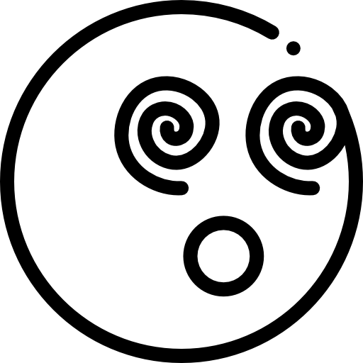
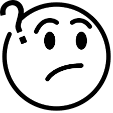

[ jQuery의 이벤트 처리]
이벤트 연결 : $(선택자).on(이벤트이름(방법), 함수)
이벤트 제거 : $(선택자).off(이벤트이름, 함수)
이벤트 강제발생 : $(선택자).trigger(이벤트이름)
이벤트 연결과 해제
이벤트 강제 발생과 시간 지연
일반 택스트에 이벤트 연결
이벤트 강제 발생(마우스 올리면)
3초 뒤에 이벤트 강제 발생
이미지의 이벤트 처리


포커스 이벤트 처리
키 이벤트 처리
0
글자
사용자 정의 속성